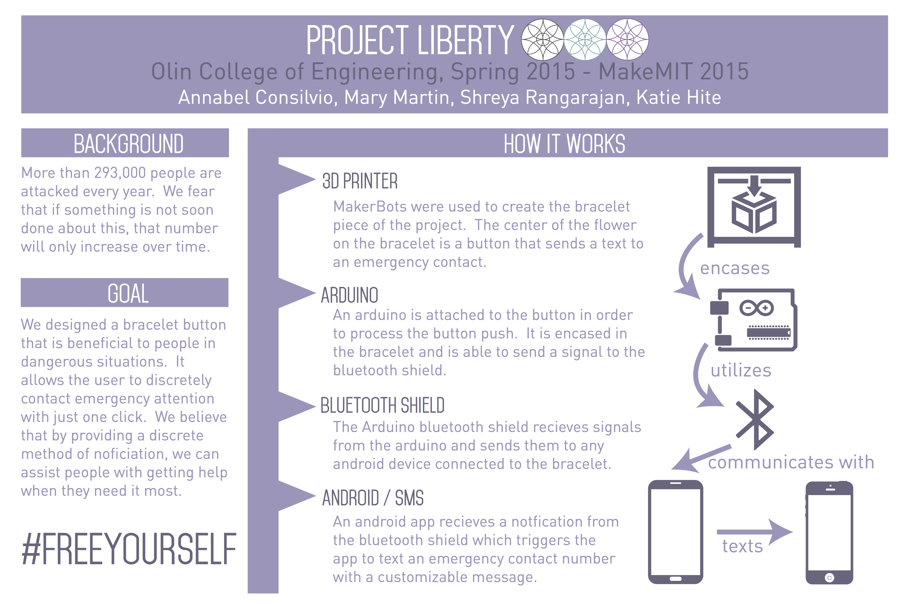
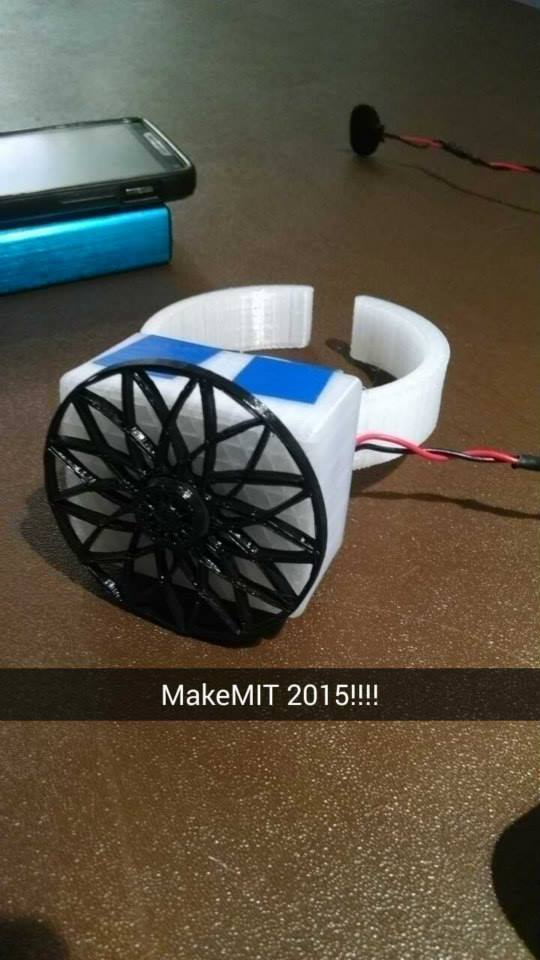
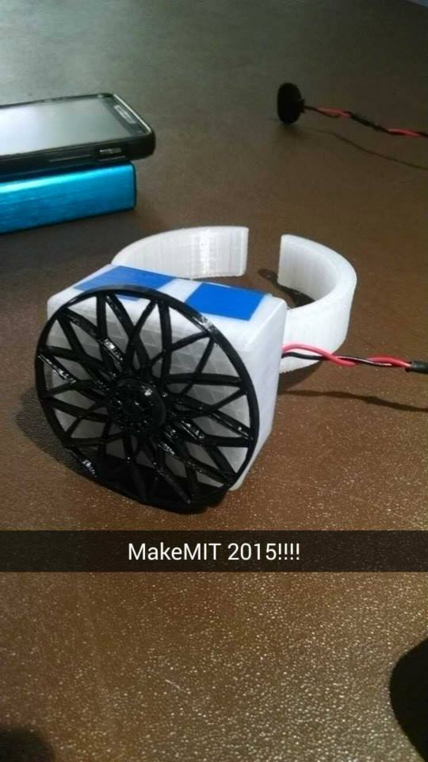

I'm a developer and designer based in Boston, MA.
Project Liberty: Safe Alert Bracelets
During the 18-hour MakeMIT hackathon in Febuary 2015, I helped to design and develop a bracelet that communicated via bluetooth with an Android app on a team of four. The purpose of the bracelet was for college students to be able to discreetly send a text message or make an emergency call with just a push of a button if they felt in danger. I worked with another teammate as a developer of both the mobile application that set up the emergency contacts and the Android code. At the end of the 18 hours, the prototype was fully functional but not quite as discrete as we were hoping due to the size of the arduino and other electrical part that were needed. In the future, we would like to move these electrical parts onto a PCB and change the material of the bracelet to allow for a more discreet and comfortable experience.
 
